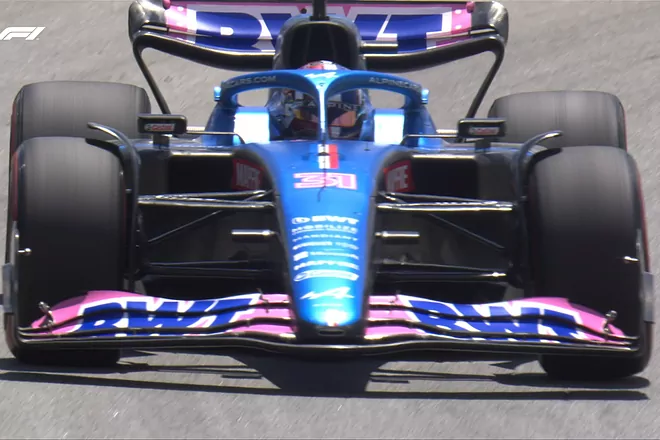
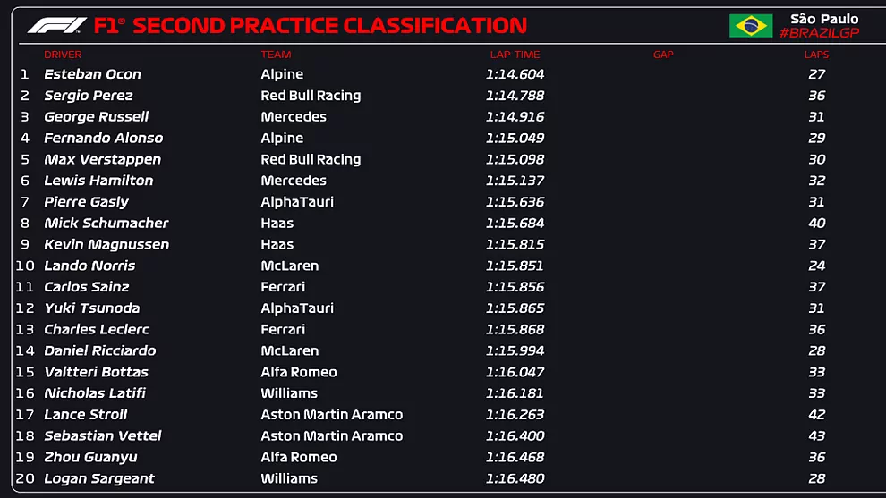

Ocon primero, Alonso cuarto (medios) y Ferrari en mitad de tabla Los Libres 2, donde se miden los ritmos con carga de gasolina, dejan un panorama irreal antes del Sprint (20.30 horas)  Si la sesión de Libres 2, los fines de semana con Sprint, tuvieran una aclaración de los kilos que cada coche lleva en el depósito, todo sería diferente. En los de Brasil, Esteban Ocon aparece con el mejor tiempo, seguido por Checo Pérez y George Russell. Fernando Alonso es cuarto, con el compuesto medio, en lugar del blando y Verstappen es quinto, también con las gomas de cinta roja y no el de amarillo como el del asturiano. Un verdadero galimatías para una sesión disputada en seco, cuando en la carrera corta puede haber algo de lluvia, y sobre todo, con puestos irreales en cuanto a los que puede dar de sí el resto del fin de semana. Los Haas siguen por delante de los Ferrari, que aparecen en el undécimo de Carlos Sainz y el decimotercero de Charles Leclerc. La lógica dice que los F1-75 llevaban más de 60 kilos en el tanque, por quizá los 30 de Alpine, pero nadie puede asegurarlo desde fuera. Son el equipo de Enstone y el de Maranello los que parecen fuera de posición, mientras Verstappen sí puede que tuviese mucho más potencial del que ha mostrado. En el Sprint, con Magnussen en la pole y Max segundo, con Sainz quinto y Alonso séptimo, se saldrá de dudas. Los blandos pueden ser la opción de goma mayoritaria para los de delante. Alonso se mostraba confiado en las posibilidades de su A522 y de poder remontar el resto del fin de semana, a tenor de sus registros a lo largo del viernes. "Con las intermedias estábamos primeros en algún momento... Con las de seco, también en la Q1 y en la Q2 por algún momento... Habrá que remontar un poco" 🔊@alo_oficial ha hablado #BrasilDAZNF1 🇧🇷 pic.twitter.com/tszB0aFxXD— DAZN España (@DAZN_ES) November 12, 2022 